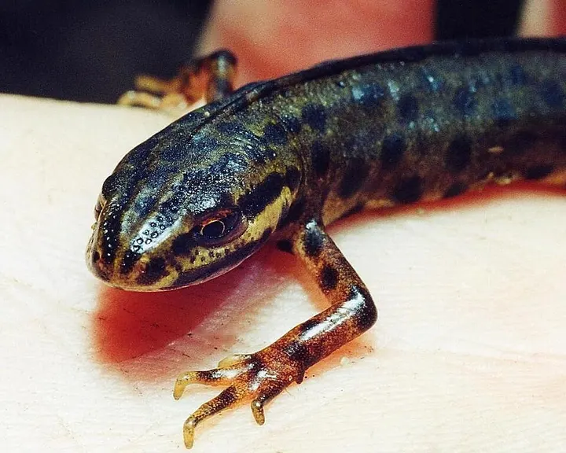

Bergmolch
Ichthyosaura alpestris
Amphibien7–12 cmnachtaktiv
LaubwaldNadelwaldBach & Tümpel
Molch mit leuchtend orangem Bauch, das Männchen im Frühjahr blau. Im April und Mai tragen die Männchen ihr blaues Wasserkleid.
So erkennst du ihn
- Bauch einfarbig orange-rot, ohne Flecken
- Männchen im Frühjahr blau mit niedrigem Kamm
- Flanken weiß mit schwarzen Punkten
- Laich
- einzelne Eier, in Blätter von Wasserpflanzen gefaltet
- Wo zu finden
- Waldtümpel, Wagenspuren, Gartenteiche im Hügel- und Bergland
- Größe
- 7 bis 12 cm
- Aktiv
- nachtaktiv
Wann im Jahr
Aktiv: März, April, Mai, Juni, Juli, August, September und Oktober. Hauptzeit: April und Mai.
Der Bergmolch ist von März bis Oktober aktiv. Besonders gut zu beobachten im April und Mai. Im April und Mai tragen die Männchen ihr blaues Wasserkleid.
Lebensweise
Was frisst der Bergmolch?
Im Wasser Kleinkrebse, Insektenlarven und Laich, an Land Würmer und Insekten.
Wasser- und Landphase
Von März bis Juni lebt er im Wasser, danach versteckt er sich an Land unter Holz und Steinen.
Gut zu wissen
Schon wassergefüllte Fahrspuren auf Forstwegen reichen ihm zum Ablaichen.
Rücksicht und Schutz
Kleine Tümpel und Fahrspuren im Wald nicht verfüllen. Gartenteich ohne Fische lassen.
Beobachtungstipp
Im Frühjahr mit einer Taschenlampe nachts in klare Waldtümpel leuchten.

Nicht verwechseln mit dem Teichmolch
Der Bauch verrät es: einfarbig orange beim Bergmolch, gelblich mit dunklen Flecken beim Teichmolch.